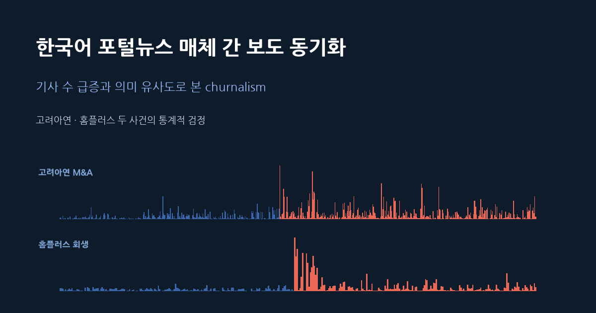
본 연구는 하나의 사건이 다수 매체의 보도를 의미적으로 수렴시키는 현상(보도 동조화)을 정량 측정한다. 고려아연 경영권 분쟁 관련 기사 50,188건의 본문을 의미 임베딩으로 변환하고, 기사쌍의 코사인 유사도를 측정하였다. 핵심 발견은 동조화의 가시성이 집계 단위에 따라 결정적으로 달라진다는 점이다. 개별 기사 단위에서는 사건이 보도를 여러 각도로 분화시켜 동조화가 묻히지만, 각 매체의 보도를 centroid로 묶는 매체 단위에서는 동조화가 선명히 드러난다. 공개매수(2024-09-13) 이후 매체 간 평균 유사도는 0.69에서 0.77로, 매우 유사한(≥0.9) 매체쌍 비중은 8.5%에서 19.4%로 상승하였다(모두 유의, p<10⁻⁴). 이 결과는 네 가지 임베딩 방식에서 일관되게 재현되어 강건하다. 두 번째 사례인 홈플러스 기업회생에서도 매체 단위 동조화가 더 약하게나마 재현되어, 집계 단위 효과의 일반성과 사건별 강도 차이를 함께 보여준다. 본 연구는 매체 간 보도 동조화가 매체 단위 집계에서 측정되어야 함을 실증한다. 나아가 이 측정틀은 플랫폼 논리와 조직의 의제 형성이 만드는 구조적 보도 동조를 경험적으로 검증하기 위한 토대를 제공한다.
한국의 뉴스 이용 환경은 세계적으로 유례를 찾기 어려운 포털 집중 구조를 보이며, 이는 매체 간 보도 동조화를 논의할 자연스러운 출발점이 된다. 한국언론진흥재단(2023)에 따르면 디지털 뉴스 이용자의 약 63%가 포털 검색으로 뉴스를 접하는 반면, 언론사 사이트를 직접 방문하는 비율은 6%에 불과하다. 더욱이 네이버 한 곳의 포털뉴스 점유율이 92.1%에 달해, 사실상 단일 플랫폼이 한국어 뉴스 유통의 전 과정을 매개하는 구조가 굳어져 있다.
이 구조에서 네이버에 제휴된 수백 개 매체는 동일한 이용자 풀을 두고 경쟁하므로, 매체 간 보도의 유사성은 한국 뉴스 생태계의 구조적 특성을 규정하는 핵심 변수가 된다. 모든 기사가 같은 검색 화면에 동일한 형식으로 노출되어 공간적 조건이 단일하게 통제되고, 매체명·발행 시각·URL 등 메타데이터도 표준화되어 대규모 정량 분석이 용이하다. 이러한 조건은 하나의 사건을 두고 매체 간 보도가 얼마나 닮아 가는지를 관찰하기에 유리한 자연 실험적 환경을 제공한다.
매체 간 보도 동조화의 측정은 학술적 관심을 넘어 사회적 시의성을 갖는데, 2026년 2월 신설된 네이버 「뉴스 제휴 심사 및 운영 평가 규정」이 그 직접적 배경이다. 이 규정은 자기 복제와 중복 부당 전송 등을 정량 척도로 도입하였고, 특히 중복 부당 전송은 두 기사의 문장 유사도가 90% 이상인 비율로 측정된다. 그러나 이러한 척도가 실제 포털뉴스 환경에서 어떤 분포를 보이는지에 대한 학술적 기준선은 아직 충분히 정립되지 않았다.
그렇다면 보도는 왜 닮아 가는가. 이 닮음은 단순한 우연이 아니라 디지털 저널리즘과 PR이 함께 설명하는 구조적 결과다. 디지털 저널리즘의 관점에서 포털 중심 생태계는 플랫폼 논리로 뉴스 생산을 동형화하여, 매체들이 같은 사건을 비슷한 헤드라인과 프레임으로 받아쓰는 동기화와 매체 간 확산 네트워크를 낳는다. PR의 관점에서는 의제 형성이론과 정보지원이론이, 기업이나 정부 같은 조직이 보도자료와 언론 관계로 조직 의제를 미디어 의제로 옮기려는 노력을 설명한다. 곧 매체 간 보도 동조화는 플랫폼의 구조적 압력과 조직의 전략적 정보 제공이 겹쳐 나타나는 현상으로 읽을 수 있으며, 그것을 정량적으로 가시화하는 일이 본 연구의 출발점이다.
본 연구는 이러한 동조화가 실제로 존재하고 사건과 함께 강해지는지를 의미 임베딩으로 측정하며, 분석 대상은 단기간 다수 매체의 집중 보도가 관찰된 고려아연 경영권 분쟁이다. 측정의 핵심 질문은 동조화를 어느 집계 단위에서 보아야 드러나는가이며, 기사·기자매체·매체로 단위가 거칠어질수록 그 가시성이 어떻게 달라지는지를 규명한다. 그 결과 개별 기사 단위에서는 묻혀 있던 동조화가 매체 단위에서 통계적으로 분명하게 드러남을 보인다. 이 측정은 그 자체로 끝이 아니라, 플랫폼 논리와 조직의 의제 형성이 만드는 구조적 보도 동조를 경험적으로 검증하기 위한 토대가 된다.
본 연구는 ① 매체 간 의제 설정과 뉴스 동질화, ② 한국 포털 환경의 어뷰징과 구조적 동조, ③ PR의 의제 형성·정보지원이론, ④ 의미 임베딩 기반 측정이라는 네 흐름이 교차하는 지점에 위치한다.
디지털 저널리즘 연구에서 뉴스 모방은 온라인 뉴스 생산의 핵심 메커니즘으로 작동한다. 매체 간 의제 설정은 의제 설정 이론(McCombs & Shaw, 1972)에 뿌리를 두며, 디지털 환경에서 그 상호 의존성이 한층 강화되었다(Vargo et al., 2018). Vargo와 Guo(2017)는 온라인 뉴스 네트워크에서 주요 언론의 의제가 다른 언론으로 빠르게 확산된다고 보았고, Harder 외(2017)는 언론이 독립적으로 의제를 세우기보다 다른 언론의 보도를 끊임없이 참조하는 구조를 형성한다고 주장하였다. 곧 디지털 뉴스 환경에서는 개별 매체의 독립 보도보다 매체 간 상호 참조와 의제 확산이 훨씬 빈번하게 일어난다.
뉴스 동질화는 다수 언론이 모이고 유통되는 포털에서 서로 비슷한 뉴스를 생산하는 현상을 가리킨다(Bennett, 1990; Boczkowski, 2010). Boczkowski(2010)는 기자들이 경쟁사를 계속 모니터링하고 따라 쓰며 같은 이슈를 반복 보도하기에, 온라인 뉴스가 많아질수록 내용이 더 비슷해지는 동질화가 나타난다고 보았다. 주목을 둘러싼 경쟁이 심화하면서 상호 참조와 모방은 뉴스 생산의 일상적 관행으로 자리 잡았다. Bennett(1990)의 인덱싱 이론은 언론이 사회의 다양한 의견 대신 정치·경제 엘리트가 허용하는 범위에 맞추어 보도함을 지적하는데, 고려아연 사례처럼 일부 매체가 특정 프레임을 지속적으로 공유한 것은 이 관점에서 의사결정 권력의 영향으로 읽을 수 있다.
한국의 온라인 뉴스 시장은 네이버·다음을 중심으로 매스미디어 중심의 생산·소비 구조를 포털 중심으로 바꾸었다(홍주현, 2024). 이용자는 언론사 홈페이지보다 포털을 통해 뉴스를 소비하고(한국언론진흥재단, 2023), 포털 알고리즘이 뉴스의 선택과 배열을 좌우하면서 포털은 단순 전달자가 아니라 노출을 결정하는 게이트키퍼로 기능한다(Flew et al., 2019). 홈페이지 직접 방문이 줄어들수록 언론사들은 포털 내 노출을 높이려는 경쟁에 더 깊이 뛰어든다.
이 구조는 뉴스 생산 방식 자체를 바꾸어, 속보 경쟁과 클릭 기반 수익모델 속에서 같은 사건에 유사 기사를 반복 생산하거나 제목만 바꿔 재전송하는 어뷰징이 빈번해졌다(함민정·이상우, 2018). 조영신 외(2015)는 포털 공급 방식과 매체 지위가 어뷰징 발생에 유의하게 영향을 미쳐, 시장 지배력이 큰 매체일수록 트래픽 유지를 위해 어뷰징을 더 많이 쓴다고 보고하였고, 송석현(2019)은 그 법적 규제 문제를 검토하였다. Kwak 외(2018, 2020)는 동일 언론사 내 어뷰징과 매체 간 어뷰징을 구분하였으나, 형식적 중복에 주목한 탓에 여러 매체가 서로 다른 기사로도 같은 프레임과 논조를 공유하는 의미 수준의 동조는 다루지 못하였다.
형식적 복제를 넘어선 구조적 동조는 뉴스 생산에 작용하는 외적 힘으로 설명된다. Shoemaker와 Reese(1996)의 영향 위계 모델은 광고주·정치권력·대기업·수용자 등 조직 외적 요인을 지목하고, Schiffrin(2021)은 직접 검열보다 광고·소유 구조·경제적 이해관계가 편집 방향을 좌우하는 미디어 캡처에 주목하였다. 특정 이해관계가 존재할 때 일부 매체 군에서는 자연스러운 수렴을 넘어서는 선택적이고 지속적인 보도 동조가 나타날 수 있다. 이러한 반복 노출은 뉴스 다양성을 줄이고 소비를 집중시켜 저널리즘 품질에도 영향을 미친다는 점에서 주목할 필요가 있다.
PR의 관점에서 매체 간 동조는 조직의 전략적 정보 제공으로도 설명된다. 의제 설정이론이 미디어 의제와 공중 의제의 관계를 다룬다면, 의제 형성이론은 기업·정부 같은 조직의 의제가 미디어 의제로 옮겨 가는 과정을 다룬다. Kiousis 외(2007)는 조직의 의제 형성 노력이 미디어 메시지에 영향을 미치고, 그 미디어 의제가 다시 공중의 기업 인식과 평가에 긍정적으로 작용함을 실증하였다. 정보지원이론에 따르면 이러한 노력은 보도자료와 언론 관계 같은 정보지원으로 이루어지며, 조직이 제공한 정보는 기자의 뉴스 생산에 큰 영향을 미친다(Curtin, 1999). 곧 조직이 배포한 보도자료가 기사 내용과 닮아 가는 현상은 매체 간 동조를 떠받치는 또 하나의 경로가 된다.
한국어 뉴스 텍스트 마이닝은 토픽 모델링과 네트워크 분석에서(진설아 외, 2013; 정안용 외, 2022; 최정균 외, 2017) 의미 임베딩으로 빠르게 옮겨 가고 있다(박지원 외, 2026; 이인규·강현철, 2025; 김도경, 2026). 그러나 이들 연구는 키워드·토픽 수준에 머물거나 소수 매체에 한정되어, 매체 단위의 대규모 의미 비교에는 이르지 못하였다. 앞 절에서 정리한 구조적 동조를 경험적으로 가르려면 의미 수준의 유사성을 대규모로 측정할 도구가 필요하다.
뉴스 의미 유사성 측정은 사전학습 언어모델로 새 단계에 들어섰는데, BERT(Devlin et al., 2019)에 이어 Sentence-BERT(Reimers & Gurevych, 2019)와 SimCSE(Gao et al., 2021)가 문장 임베딩의 표준을 마련하였고, Chen 외(2024)는 6천만 건의 뉴스를 임베딩해 국가 간 보도 동기성을 측정함으로써 본 연구와 직접 맞닿는 선례를 제시하였다. 한국에서도 이종혁(2021)이 Doc2Vec으로 매체 간 동질화를 탐색하였고, 안정윤·이종혁(2015)과 박대민 외(2018)가 이슈 속성 네트워크와 문장 연결망으로 접근하였으며, 영문에서도 Wang과 Shi(2022, 2023)가 매체 간 의제 설정을 전산적으로 분석하였다. 그러나 이들은 Doc2Vec·어휘·네트워크 수준에 머물러, 다국어 대형 임베딩을 매체 centroid 단위로 적용하고 집계 단위를 체계적으로 비교한 본 연구와 구별된다. 본 연구는 형식적 복제 여부 대신 의미 임베딩 유사성과 시간적 동조성을 결합해, 사건 중심의 자연스러운 수렴과 구조적으로 형성된 동조를 구분하는 측정틀을 제시한다.
이론적 배경은 매체 간 동조가 플랫폼 논리·뉴스 어뷰징·미디어 캡처·조직의 의제 형성이 겹쳐 나타나는 구조적 현상임을 시사한다. 본 연구는 이 가운데 의미 임베딩 측정으로 직접 답할 수 있는 세 가지 연구문제에 집중한다.
RQ1. 포털 뉴스에서 매체 간 보도 동기화는 어떤 분포와 구조를 갖는가?
RQ2. 매체 간 동기화는 사건의 진행 단계에 따라 어떻게 변화하는가?
RQ3. 보도 동기화는 모든 매체에서 동일한가, 아니면 특정 매체 군에서 더 강하게 나타나는가?
세 연구문제를 통계로 검정하기 위해, 본 연구는 종래의 서술적 관찰을 명시적 귀무가설과 단측 대립가설로 조작화한 다섯 가설을 세운다. 이렇게 가설을 검정으로 전환하는 것이 본 연구의 방법적 차별점이며, 같은 분석 틀을 네 임베딩 방식에 똑같이 적용하여 결론이 특정 모델이나 입력에 의존하지 않는 강건성까지 함께 확인한다. 한편 논조·프레임, 제휴 범주, 어뷰징·기업 의제 형성처럼 추가 자료가 필요한 물음은 9장에서 후속 연구 문제로 정리한다.
H1 (규모). 사건 이후 일별 기사 수와 보도 매체 수가 유의하게 증가한다.
H2 (매체 동조화). 사건 이후 매체 간 보도 유사도(평균 및 ≥0.9 비중)가 유의하게 상승한다.
H3 (집계 단위). 같은 동조화라도 기사·기자매체·매체 중 무엇으로 묶어 비교하느냐에 따라 드러나는 정도가 달라지며, 한 매체의 기사를 묶어 매체끼리 비교할 때 가장 뚜렷하게 나타난다.
H4 (강건성). 동조화 결론은 네 가지 임베딩 방식에 무관하게 성립한다.
H5 (발행 타이밍). 사건 당일 일부 매체·기자는 기사를 단시간에 몰아 발행한다(rapid-fire).
연구방법은 데이터 수집과 의미 임베딩에서 출발하여, 유사도를 재는 집계 단위와 시간 창을 정의하고, 그 위에 통계 검정과 발행 타이밍 분석을 차례로 얹는 순서로 구성된다.
분석 대상 사건은 2024년 가을 한국 자본시장을 뒤흔든 고려아연 경영권 분쟁이다. 2024년 9월 13일 MBK파트너스와 영풍 연합이 고려아연 지분을 겨냥한 공개매수를 전격 발표하면서 적대적 인수합병이 시작되었다. 이후 양측의 자사주 공개매수 경쟁, 2025년 1월의 임시주주총회, 3월의 정기주주총회, 4월의 검찰 압수수색으로 분쟁은 여러 국면을 거치며 이어졌다. 이처럼 단기간에 수백 개 매체가 같은 사안을 집중 보도한 점이 매체 간 동조화를 관찰하기에 적합한 조건을 만든다. 그림 1은 사모펀드(PE) 부정보도 9개 사례와 정산피해 1개 사례를 보도 폭발 시점(t=0)에 정렬한 지형으로, 본 보고서는 그중 고려아연과 홈플러스를 분석한다.
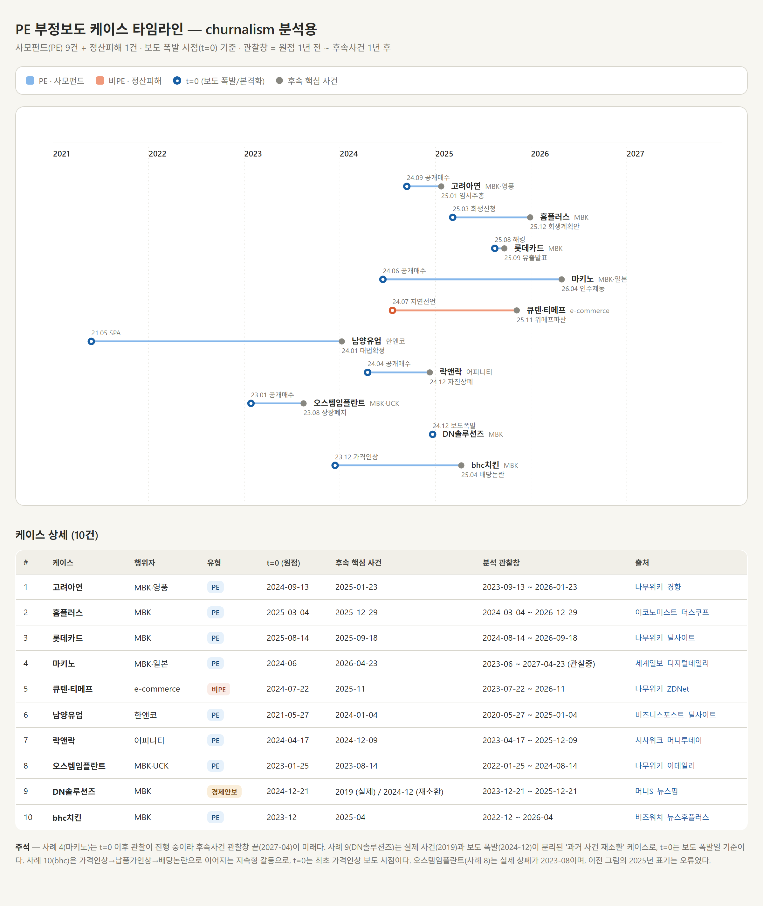
데이터는 네이버 뉴스에서 검색어 '고려아연'으로 기사를 수집하고 본문을 추출해 데이터베이스에 적재하는 방식으로 구축하였다. 동조화는 사건 당일 여러 매체가 한꺼번에 기사를 쏟아내는 현상이므로, 바로 그 피크일을 빠짐없이 수집하는 일이 모든 분석의 토대가 된다. 그런데 네이버 뉴스는 같은 검색을 오래 이어가면 응답을 막아 하루치를 열 건 안팎만 돌려주는 스로틀이 자주 걸려, 정작 기사가 폭증하는 사건일이 크게 과소 집계되기 쉽다. 이 문제를 해소하기 위해 본 연구는 무한스크롤의 커서 기반 more-API로 하루치를 전수 수집하는 새 크롤러를 제작하였고, 스로틀이 감지되면 세션 갱신과 점증 백오프로 자동 복구하도록 설계하였다. 그 결과 한 번에 열 건에 머물던 피크일이 수백 건 규모로 온전히 복원되어, 사건일의 보도 밀집을 누락 없이 담아낼 수 있었다. 수집 직후에는 피크일의 기사 수가 비정상적으로 적지 않은지 점검하여 데이터의 완전성을 확인하였으며, 이렇게 확보한 전수 자료가 뒤따르는 모든 지표와 검정의 신뢰성을 떠받친다.
최종 분석에는 사건과 직접 관련된 기사 50,188건의 본문을 사용하며, 분석 기간은 공개매수일(2024-09-13)의 1년 전부터 후속 핵심 사건인 임시주주총회(2025-01-23)의 1년 후까지, 곧 2023-09-13부터 2026-01-23까지로 둔다. 이렇게 두 핵심 사건을 각각 1년의 사전·사후 구간으로 감싸 동조화의 변화를 앞뒤로 충분히 관찰할 수 있게 하였다. 사건 원점은 공개매수 발표일인 2024-09-13으로 두어 이 시점을 기준으로 사전과 사후를 나누고, 임시주총일은 보조 기준선으로 함께 표시한다. 각 기사는 발행 시각과 매체명을 가지므로 시간 창에 따른 집계와 매체 단위 집계가 모두 가능하다.
의미 임베딩은 텍스트를 그 의미를 담은 숫자 벡터로 바꾸는 기술로, 비슷한 의미의 글은 비슷한 방향의 벡터로 변환된다. 따라서 두 벡터가 가리키는 방향이 얼마나 일치하는지를 보면 두 글의 의미 유사도를 잴 수 있으며, 이때 방향 일치도를 재는 표준 척도가 바로 코사인 유사도다. 본 연구는 모든 유사도 계산에 앞서 임베딩을 L2 정규화하는데, 그 의미와 효용은 아래에서 차례로 설명한다.
L2 정규화는 벡터의 길이를 1로 맞춰 크기는 버리고 방향만 남기는 절차로, 여기서 벡터의 L2 길이(노름)는 각 성분을 제곱해 더한 뒤 제곱근을 취한 값이다. 정규화는 이 길이로 벡터를 나누어 길이가 정확히 1인 단위벡터를 만드는데, 예컨대 벡터 (3, 4)의 길이는 √(9+16)=5이다. 이를 길이로 나누면 (0.6, 0.8)이 되고 그 길이는 √(0.36+0.64)=1이 되어, 방향은 그대로 둔 채 크기만 1로 통일됨을 알 수 있다.
L2 정규화를 하는 가장 큰 이유는 코사인 유사도 계산이 크게 간단해지기 때문인데, 코사인 유사도는 원래 두 벡터의 내적을 각 벡터의 길이 곱으로 나눈 값이다. 그런데 두 벡터를 미리 정규화하면 길이가 모두 1이 되어 분모가 1이 되고, 따라서 코사인 유사도가 곧 두 단위벡터의 내적과 정확히 같아진다. 결과적으로 나눗셈이 사라지고 곱셈과 덧셈만으로 유사도가 계산되어, 수만 건 규모의 연산도 행렬 곱 한 번으로 끝낼 수 있다.
기하학적으로 L2 정규화는 모든 벡터를 반지름 1인 구의 표면 위 점으로 옮기는 작업이며, 그 구 위에서 두 점이 같은 방향을 가리킬수록 코사인 값이 1에 가까워진다. 이렇게 하면 글의 길이나 강도 같은 크기 차이는 무시되고 의미의 방향만 비교되므로, 긴 기사든 짧은 기사든 동일한 기준으로 공정하게 비교된다. 본 연구가 모든 임베딩을 정규화한 것은 바로 이러한 해석적 명료성과 연산 효율을 동시에 얻기 위해서다.
매체 단위 분석에서는 정규화를 두 단계로 적용하는데, 먼저 각 기사의 임베딩을 단위벡터로 정규화한 뒤 한 매체에 속한 기사 벡터들을 평균하여 그 매체의 centroid를 만든다. 이렇게 얻은 평균 벡터는 길이가 1보다 작아지므로 다시 한 번 L2 정규화하여 길이를 1로 맞춘다. 그래야 매체 간 centroid 비교 역시 크기에 휘둘리지 않고 오직 보도의 의미 방향만으로 이루어진다.
한국어 뉴스 임베딩에는 여러 모델 선택지가 있으며 용도에 따라 적합한 모델이 달라지는데, 짧은 헤드라인이나 문장에는 ko-sroberta-multitask·KoSimCSE·KR-SBERT 같은 한국어 SBERT 계열이 무난하다. 반면 긴 본문이나 검색·RAG에는 다국어·장문 모델이 강점을 보이며, 특히 bge-m3는 다국어와 8,192토큰 장문을 지원해 긴 뉴스 본문을 통째로 임베딩할 때 사실상 표준급으로 채택된다. 그 밖에 multilingual-e5-large나 고려대 KURE-v1도 한국어 검색 과제에서 상위 성능을 보고하여, 본 연구의 모델 선택에 참고가 된다.
본 연구는 이 가운데 bge-m3와 text-embedding-3-large 두 모델을 채택하였는데, bge-m3는 긴 본문을 손실 없이 담을 수 있고 자체 GPU 서버에 올려 비용 없이 대량 처리할 수 있다. text-embedding-3-large는 인프라 부담 없이 안정적 품질을 제공하는 API 기준선으로 함께 두었으며, 두 모델에 각각 제목+본문과 명사 TF-IDF 묶음이라는 두 입력을 적용해 모두 네 가지 방식을 구성한다. 명사 묶음 방식은 형태소 분석으로 명사를 추출한 뒤 TF-IDF가 0.05 이상인 명사만 남겨 임베딩하며, 네 방식이 모두 같은 결론을 주는지로 결과의 강건성을 확인한다.
본 연구의 핵심 설계는 동일한 유사도를 세 가지 집계 단위에서 나란히 측정하는 데 있다. 첫째 기사 단위는 개별 기사 벡터 쌍의 코사인을 직접 보고, 둘째 기자-매체 단위는 같은 매체의 같은 기자가 쓴 기사를 하나의 centroid로 묶어 비교한다. 셋째 매체 단위는 한 매체의 모든 기사를 centroid로 묶어 매체 간 코사인을 보며, 모든 단위에서 그에 속한 기사를 평균·정규화한 centroid 사이의 유사도를 측정한다.
시간은 사건일에 정렬하여 1·5·10·20일의 네 가지 창으로 끊고, 한 창 안의 기사와 단위를 모아 그 창의 유사도 분포를 구한다. 창을 넓힐수록 하루치 표본 부족에서 오는 잡음이 줄어 동조화의 추세가 한층 뚜렷해진다. 각 창과 단위에서 네 가지 지표, 곧 단위 수와 평균 유사도, 그리고 임계(0.80·0.90) 이상 쌍의 절대 빈도와 상대 빈도를 함께 산출하며, 거의 동일한 보도를 따로 보기 위해 0.99 임계도 보조로 둔다.
매체 단위 동조화 시계열에는 역할이 다른 세 가지 통계 검정을 적용하며, 그 작동 방식은 다음과 같다. 첫째, 사건 전후의 매체 간 유사도와 임계 이상 빈도를 사전 구간과 사후 구간의 두 표본으로 나누어 단측 Mann–Whitney 검정으로 비교한다. 이 검정은 분포 가정 없이 사후 값이 사전 값보다 큰지를 순위만으로 판정하므로, 구간 수가 많지 않고 정규성을 보장하기 어려운 시계열에 적합하다. 둘째, 보도 매체 수의 사후 급증은 0 이상의 계수 자료에 맞고 과대산포를 허용하는 음이항 회귀로 검정해 증가 계수의 유의성을 확인한다. 셋째, 상승이 시작된 시점은 누적합 관리도인 CUSUM으로 검출하는데, 평소 구간의 평균과 표준편차를 기준선으로 삼아 표준화한 값을 차례로 누적하고 그 합이 한계선(h=5σ)을 처음 넘는 시점을 변화점으로 본다. 세 검정은 각각 동조화의 크기·규모·시점을 맡아 같은 현상을 서로 다른 각도에서 교차 확인하며, 결과는 5장에서 다른 지표와 같은 그림·표 형식으로 제시한다.
거시적 동조화의 미시적 메커니즘을 보기 위해 사건 당일의 발행 타이밍을 분석하며, 분 단위 발행 시각과 기자명을 가진 데이터를 사용한다. 매체와 기자별로 60분 내 최대 발행 수(peak60)를 산출한 뒤, 이를 무작위 발행 영모형과 비교해 우연으로 설명되지 않는 의도적 몰아쓰기(rapid-fire)를 식별한다. 같은 무작위 영모형 논리가 일별 동조화와 분별 발행 타이밍에 일관되게 적용되어, 거시와 미시 분석을 하나의 틀로 잇는다.
코드·재현. 본 분석의 전 과정(수집 → 필터링 → 형태소 → 임베딩 4가지 → 시각화 → 통계검정)은 공개 저장소 github.com/sdkparkforbi/news-crawler 의 노트북으로 내려받아 쓸 수 있다. 뉴스크롤러 노트북으로 검색어별 기사·본문을 수집하고 그 결과(bodies_검색어.csv)를 뉴스분석 노트북에 넣으면, 본 보고서의 그림과 표가 검색어만 바꿔 그대로 재현된다(Google Colab·서버 JupyterLab 공용).
서술 지표를 기사 수 → 평균 유사도 → 임계 이상 절대빈도 → 임계 이상 상대빈도 순으로 살피고, 각 지표를 4임베딩 × 1·5·10·20일 템플릿으로 제시한 뒤 그 위에서 통계 검정을 수행한다. 모든 그림은 행이 4임베딩, 열이 시간 창이며, 칸마다 세 단위(기사·기자매체·매체)를 색이 다른 세 선으로 그린다.
분석은 사건이 만든 보도의 규모를 보는 데서 출발하는데, 기사 수와 보도에 가담한 매체 수는 공개매수일 직후 모든 시간 창에서 가파르게 치솟는다. 1일 창에서는 변동이 크지만 사건일의 폭증이 한 점으로 또렷이 드러나고, 창을 5·10·20일로 넓히면 사후 구간 전반이 평소보다 높은 수준을 유지함이 보인다. 곧 사건은 더 많은 기사를 더 많은 매체가 쏟아내게 만드는 규모적 변화를 먼저 일으킨다.
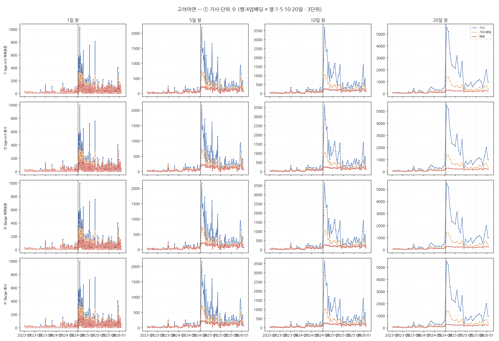
다음으로 기사들이 의미적으로 얼마나 닮았는지를 평균 코사인유사도로 본다. 세 단위 가운데 매체 단위(빨간 선)가 일관되게 가장 높고 사건 후 한 단계 더 올라서는 반면, 기사 단위(파란 선)는 평소에도 낮고 사건 후 변화도 작아 동조화가 잘 드러나지 않는다. 시간 창을 넓힐수록 매체 단위의 사후 상승이 잡음에서 분리되어 뚜렷해지는데, 이는 매체별 보도가 사건을 계기로 같은 방향으로 수렴함을 뜻한다.
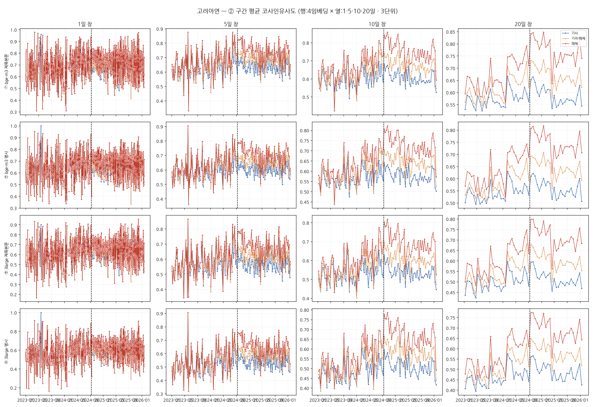
유사 보도가 실제로 몇 건이나 쏟아졌는지는 임계 이상 쌍의 절대 개수로 본다. ≥0.8과 ≥0.9 모두 사건 후 절대 수가 가파르게 늘어나며, 기사 단위에서는 near-duplicate 쌍이 사건 후 수천 건대로 불어난다. 매체 단위에서도 매우 닮은 매체쌍이 0에서 수십 건대로 계단처럼 증가하여, 비중과는 무관하게 동조 보도의 양 자체가 폭증함을 보여준다.
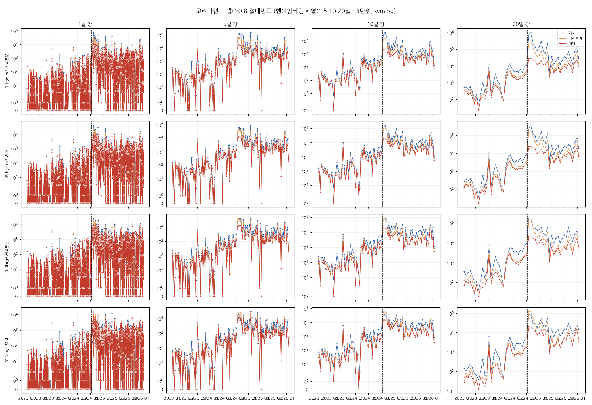
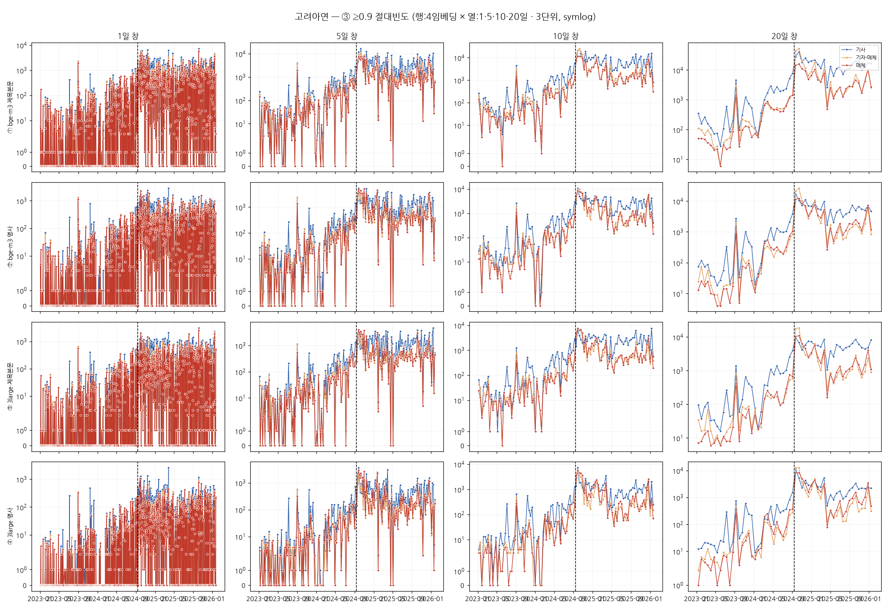
이번에는 전체 쌍 가운데 유사 보도가 차지하는 비중을 본다. 매체 단위에서 ≥0.8·0.9 비중이 사건 후 크게 뛰어 동조화가 비율로도 분명히 드러나는 반면, 기사 단위에서는 비중이 오히려 줄어드는데 이는 사건이 보도를 여러 갈래로 분화시켜 분모를 키웠기 때문이다. 표 1은 20일 창 기준으로 단위가 거칠어질수록 동조화가 강해지는 사다리를 요약하며, 결국 동조화는 매체 단위에서 가장 선명하게 측정됨을 보여준다.
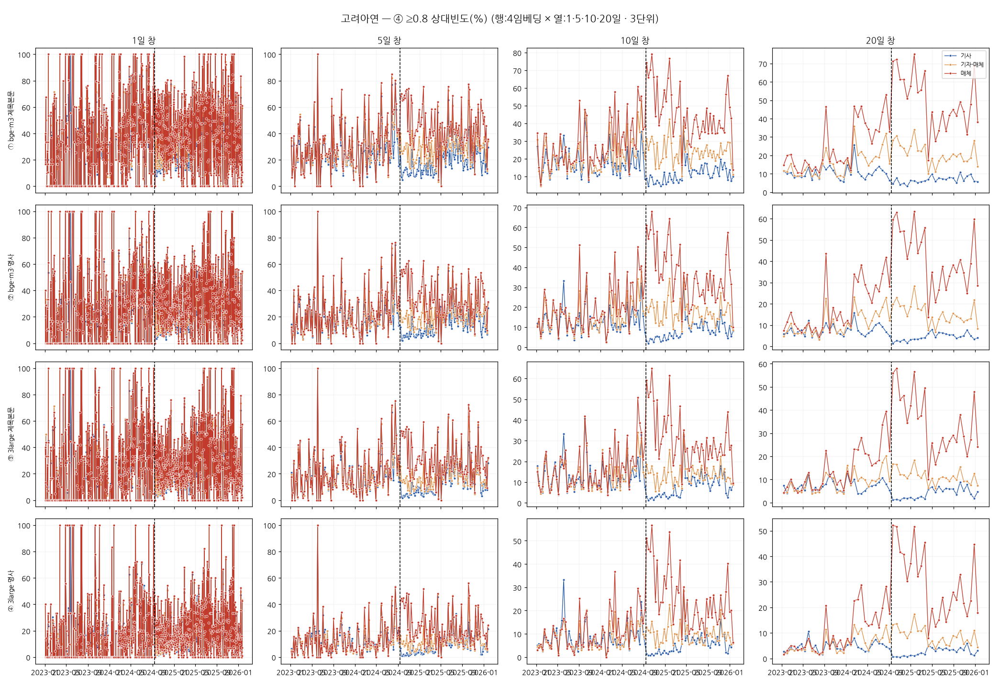
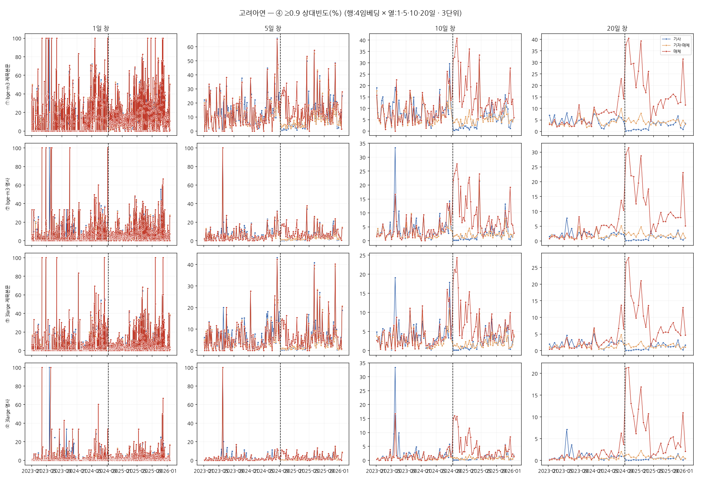
| 단위 | 평균 유사도 | ≥0.9 비중 | 판정 |
|---|---|---|---|
| 기사 | 0.579 → 0.588 (Δ+0.01) | 4.4% → 2.3% (Δ−2.1%p) | 묻힘 |
| 기자-매체 | 0.631 → 0.671 (Δ+0.04) | 4.5% → 4.2% (≈) | 중간 |
| 매체 | 0.693 → 0.771 (Δ+0.08) | 8.5% → 19.4% (Δ+10.9%p) | 동조화 ✓ |
거의 동일한(≥0.99) 기사쌍의 변화는 동조화의 극단을 따로 보여주는데, 본 분석은 0.90·0.95와 함께 0.99 임계도 함께 산출하였다. 기사 단위에서 ≥0.99 near-duplicate 쌍의 절대 수는 사건 후 약 열 배로 불어났지만, 그 비중은 오히려 줄었는데 이는 보도 분화가 분모를 크게 키웠기 때문이다. 한편 매체 단위에서는 centroid 평균화로 ≥0.99가 거의 나타나지 않으므로, 0.99 임계는 그림에서 제외하고 본문에만 보고한다.
앞 절에서 본 네 현상이 모두 우연이 아님을, 같은 매체 단위에서 사전 평소 구간과 사후 구간을 직접 비교해 통계로 확인한다. 20일 창으로 끊은 각 구간 값을 사전 18개·사후 25개 표본으로 모아 단측 Mann–Whitney 검정을 적용하고, 네 임베딩에서 모두 같은 결론이 나오는지 함께 본다. 그림 8과 표 2가 보여 주듯 매체 수·평균 유사도·임계 이상 절대빈도·상대빈도가 예외 없이 사후에 유의하게 상승한다. 곧 규모가 커지고 의미가 수렴하며 닮은 보도의 양과 비중이 함께 오르는 흐름이, 네 임베딩 전부에서 통계적으로 확정된다.
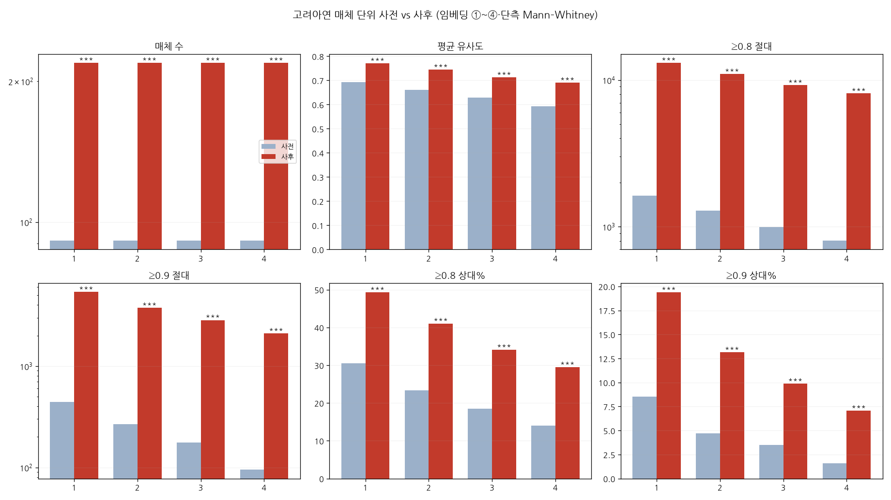
| 현상 (절) | 매체 단위 사전→사후 | p (4임베딩) | 결론 |
|---|---|---|---|
| ① 기사·매체 수 (5.1) | 매체 91→219개 | 1.6×10⁻⁸ (음이항 유의) | 더 많은 매체가 합류 |
| ② 평균 유사도 (5.2) | 0.693→0.771 | 1.9×10⁻⁵ ~ 9.6×10⁻⁵ | 매체 의미 수렴 |
| ③ ≥0.8 절대빈도 (5.3) | 1,630→13,089 매체쌍 | ~5×10⁻⁸ | 닮은 보도 폭증 |
| ③ ≥0.9 절대빈도 (5.3) | 444→5,392 매체쌍 | 6×10⁻⁸ ~ 2×10⁻⁷ | 매우 닮은 보도 폭증 |
| ④ ≥0.8 상대빈도 (5.4) | 30.5%→49.3% | 6×10⁻⁵ ~ 1×10⁻⁴ | 동조 비중 상승 |
| ④ ≥0.9 상대빈도 (5.4) | 8.5%→19.4% | 2.8×10⁻⁵ ~ 4.3×10⁻⁵ | 동조 비중 상승 |
| 기사 단위 ≥0.9 절대빈도 1,841→16,492건(p<10⁻⁸) — 절대량 폭증은 기사 단위에서 더 극적이다. 모든 검정은 사전 18·사후 25개 20일 구간의 단측 Mann–Whitney이다. | |||
특히 닮은 보도의 절대량 폭증은 기사 단위에서 한층 극적으로 나타나, 매우 유사한(≥0.9) 기사쌍은 사전 1,841건에서 사후 16,492건으로 약 아홉 배 늘었다(p<10⁻⁸). 비중만 보면 분모가 커져 가려지지만, 절대 개수로 보면 동조 보도가 실제로 쏟아졌음이 분명히 드러난다. 사전→사후 비교가 동조화의 크기와 유의성을 확정한다면, 그 상승이 정확히 언제 시작됐는지는 변화점 검정으로 이어서 확인한다.
이 변화점 검정은 한두 사례에 그치지 않고 모든 임베딩과 지표에 같은 방식으로 적용할 수 있다. 평소 구간을 기준선으로 잡은 상향 CUSUM을 매체 단위의 네 임베딩 × 네 지표에 적용하면, 누적합이 한계선(5σ)을 넘는 시점이 표 3과 그림 9처럼 모두 2024년 8~9월에 모인다. 매체 수와 평균 유사도는 공개매수 직후인 9월 중하순에 변화점이 잡히고, ≥0.9 빈도는 그보다 조금 이른 8월 중순~9월 초에 잡혀 의미적 수렴이 사건과 거의 동시에 시작됐음을 가리킨다. 네 임베딩이 같은 시기를 가리켜, 변화의 시점 추정 역시 특정 모델이나 입력에 의존하지 않음을 보여준다.
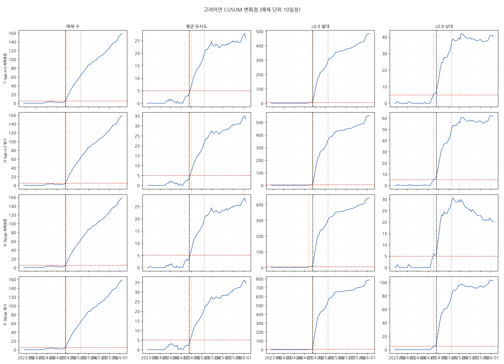
| 임베딩 | 매체 수 | 평균 유사도 | ≥0.9 절대 | ≥0.9 상대 |
|---|---|---|---|---|
| ① bge-m3·제목본문 | 2024-09-18 | 2024-09-28 | 2024-09-08 | 2024-08-19 |
| ② bge-m3·명사 | 2024-09-18 | 2024-09-28 | 2024-09-08 | 2024-08-19 |
| ③ 3large·제목본문 | 2024-09-18 | 2024-09-18 | 2024-08-09 | 2024-08-19 |
| ④ 3large·명사 | 2024-09-18 | 2024-09-28 | 2024-09-08 | 2024-08-19 |
| 모든 지표가 네 임베딩에서 2024년 8~9월(공개매수 전후)에 변화점이 잡혀, 동조화 상승의 시점이 일관되게 사건과 맞물린다. | ||||
거시적 동조화가 실제 뉴스룸에서 어떻게 만들어지는지는, 사건 당일의 발행 타이밍을 무작위 영모형과 견주어 통계로 들여다보면 드러난다. 공개매수 당일 매체는 보도량을 채우는 물량형과 짧은 시간에 몰아치는 버스트형으로 갈렸는데, 한국경제는 16건을 하루에 고르게 내보낸 반면 아시아경제와 빅데이터뉴스는 7~8건 중 5건을 60분 안에 쏟아냈다(영모형 p=0.001). 기자 단위로 내려가면 김준형 기자가 7건 중 5건을 60분 안에 발행하는 등 명백한 rapid-fire가 무작위 기대를 크게 벗어났다(p=0.0003, 서효림 p=0.005). 이러한 버스트는 같은 사안을 거의 동시에 받아쓰는 미시 행동으로, 앞서 통계로 확인한 매체 단위 동조화가 어떤 경로로 발생하는지를 구체적으로 설명한다.
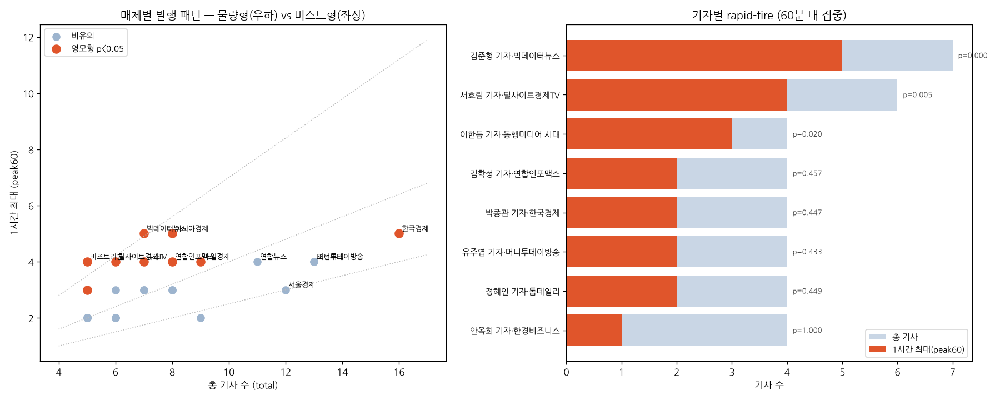
두 번째 사례인 홈플러스 기업회생도 고려아연과 똑같은 틀로 분석한다. 시간 원점은 회생 신청일(2025-03-04), 후속 핵심 사건은 회생계획안 제출(2025-12-29)이며, 분석 기간은 2024-03-04부터 2026-12-29까지, 관련 기사는 47,070건이다. 모든 그림은 §5와 같은 4임베딩 × 1·5·10·20일 템플릿이며, 검은 점선은 회생 신청일, 회색 점선은 회생계획안 제출일이다.
회생 신청 직후 기사 수와 보도 매체 수가 모든 시간 창에서 가파르게 치솟는다. 1일 창에서는 신청일 전후의 폭증이 한 점으로 또렷하고, 창을 넓히면 2025년 봄 내내 평소보다 높은 수준이 유지된다. 매체 단위 수는 20일 창에서 평소 158개에서 사후 266개로 늘어, 더 많은 매체가 회생 국면 보도에 합류했음을 보여준다.
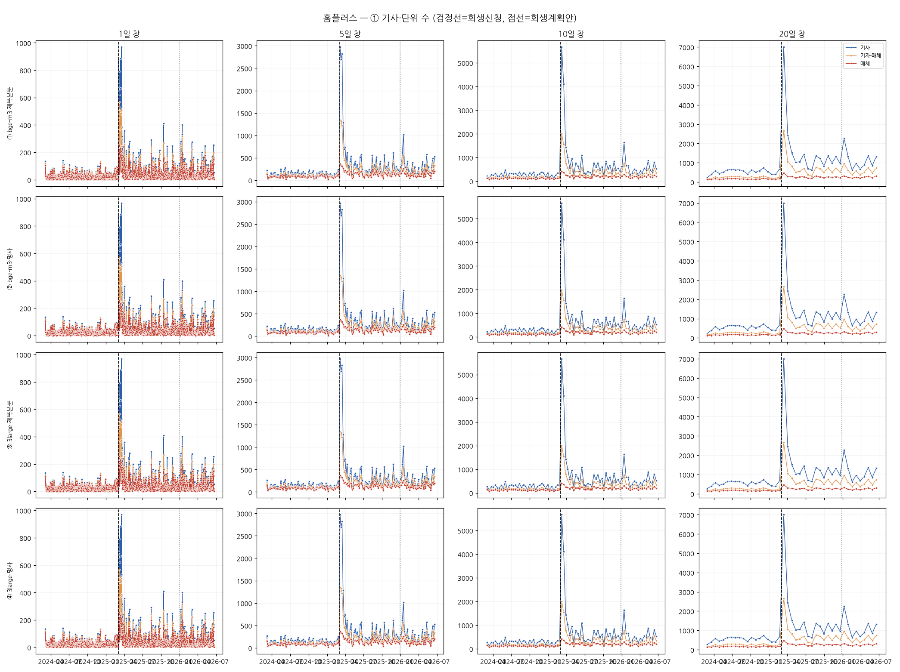
매체 단위(빨간 선)가 일관되게 가장 높고 회생 신청 후 한 단계 올라서며, 20일 창에서 평균 유사도가 0.68에서 0.72로 상승한다. 반면 기사 단위(파란 선)는 평소에도 낮고 사후 변화도 작아 동조화가 드러나지 않는다. 고려아연과 같은 사다리(기사<기자매체<매체)가 재현되지만, 매체 단위 상승폭(Δ0.05)은 고려아연(Δ0.08)보다 작다.
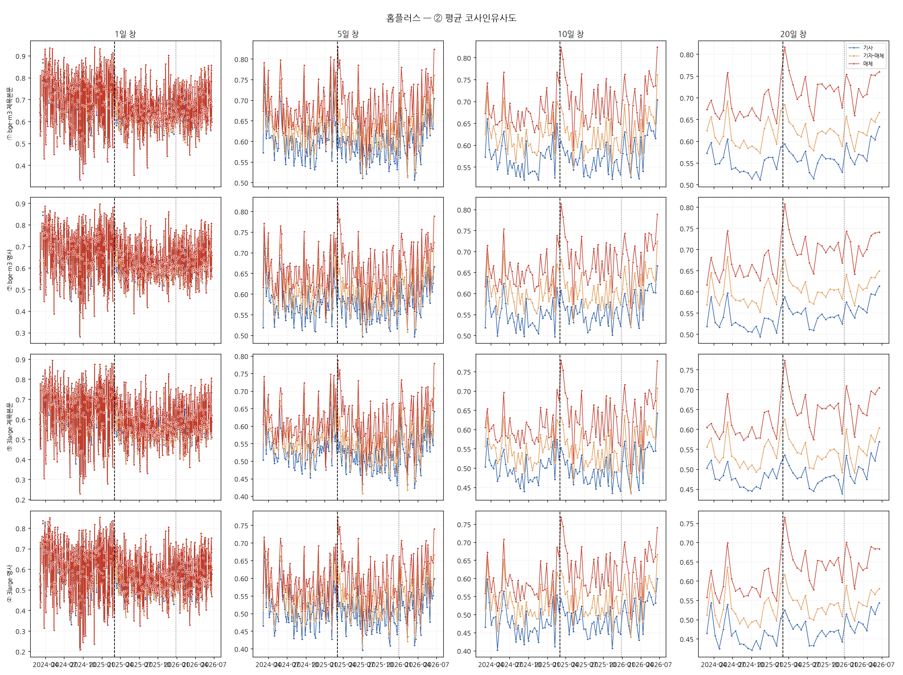
닮은 보도의 절대 개수는 사후에 크게 늘어, 매체쌍 ≥0.8은 3,348에서 13,780으로, ≥0.9는 942에서 3,963으로 증가한다. 기사 단위에서도 매우 유사한(≥0.9) 쌍이 4,845에서 12,089건으로 약 2.5배 불어난다. 동조 보도의 양 자체는 고려아연과 마찬가지로 사건 후 분명히 폭증한다.
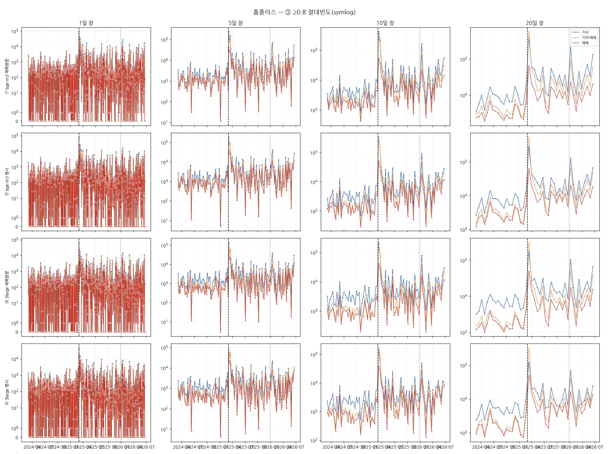
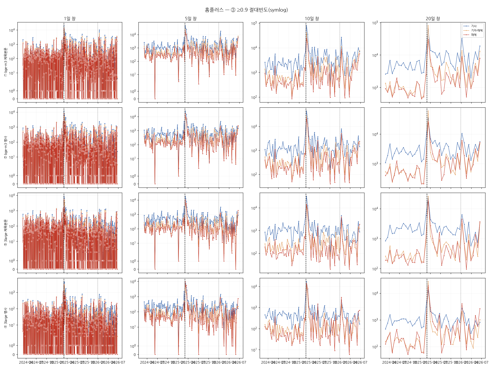
비중으로 보면 결이 갈린다. 매체 단위 ≥0.8 비중은 26.2%에서 33.8%로 뚜렷이 오르지만, 거의 동일한(≥0.9) 비중은 7.4%에서 8.4%로 거의 움직이지 않는다. 표 4는 단위별 사전→사후를 요약하며, 홈플러스에서는 닮은 보도가 늘되 매체들이 "거의 동일한" 수준까지 수렴하지는 않았음을 보여준다.
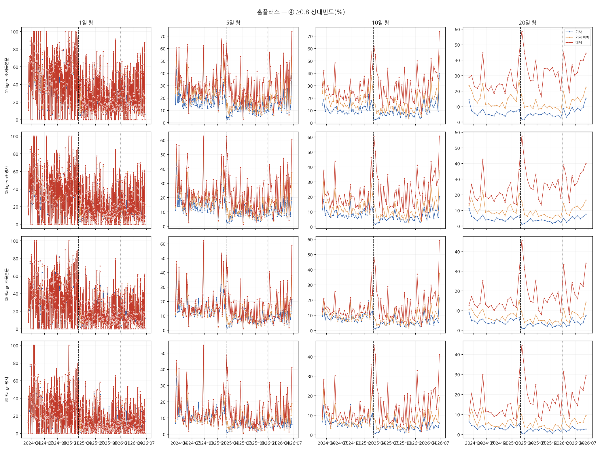
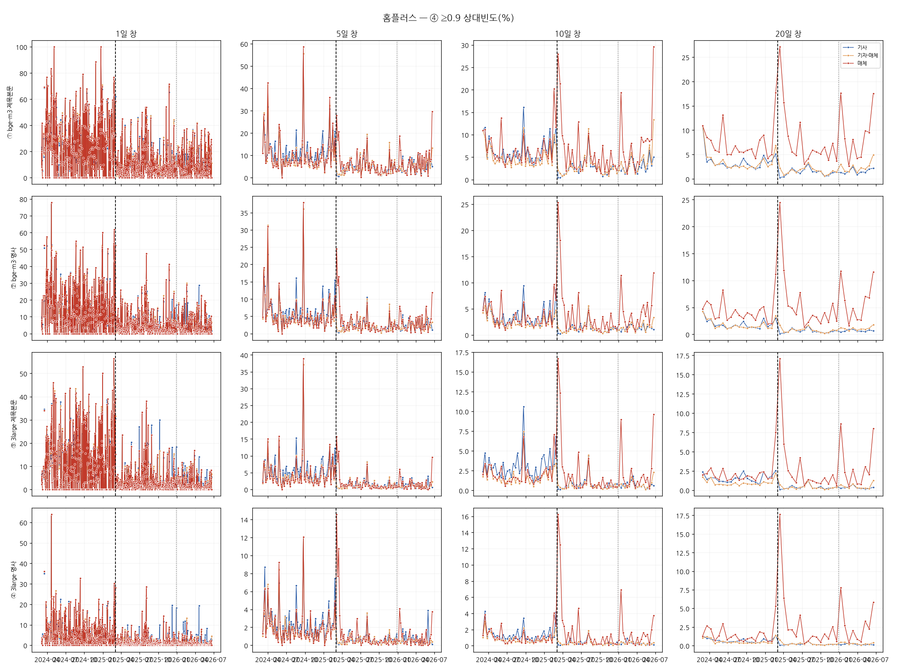
| 단위 | 평균 유사도 | ≥0.9 비중 | 판정 |
|---|---|---|---|
| 기사 | 0.550 → 0.566 (Δ+0.02) | 3.6% → 1.4% (Δ−2.2%p) | 묻힘 |
| 기자-매체 | 0.614 → 0.624 (Δ+0.01) | 3.6% → 2.0% (Δ−1.6%p) | 약함 |
| 매체 | 0.678 → 0.723 (Δ+0.05) | 7.4% → 8.4% (Δ+1.0%p) | 약한 상승 |
매체 단위 사전→사후 검정에서 매체 수와 평균 유사도, ≥0.8·0.9 절대빈도, ≥0.8 상대빈도가 네 임베딩에서 모두 유의하게 상승한다. 다만 ≥0.9 상대빈도만은 유의하지 않아(p=0.16~0.73), 홈플러스 동조화가 양과 평균에서는 분명하되 "거의 동일한 비중"에서는 약함을 통계가 확인한다. 표 5가 현상별 결과다.
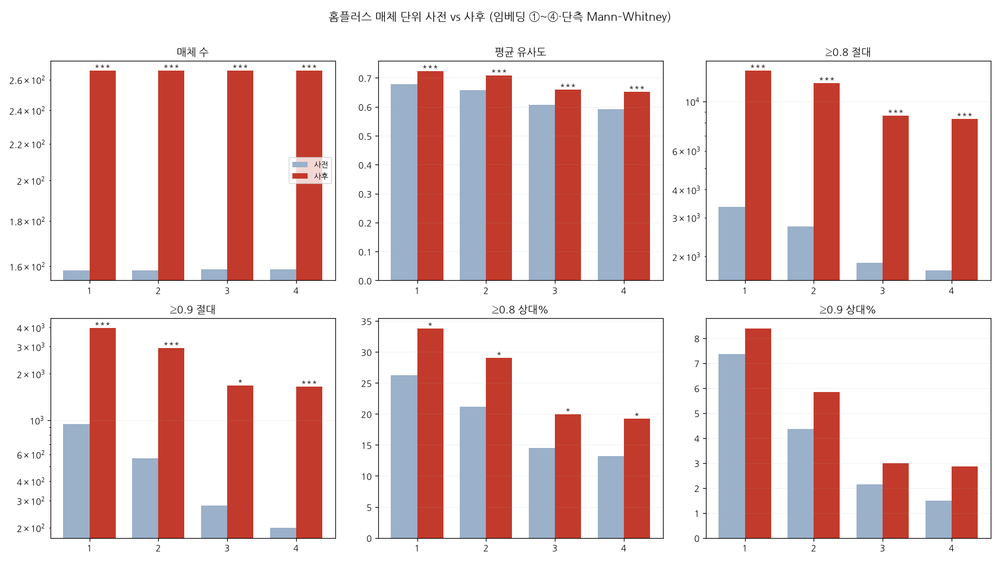
| 현상 (절) | 매체 단위 사전→사후 | p (4임베딩) | 결론 |
|---|---|---|---|
| ① 기사·매체 수 (6.1) | 매체 158→266개 | 1.3×10⁻⁸ | 매체 합류 |
| ② 평균 유사도 (6.2) | 0.678→0.723 | 3.9×10⁻⁵ ~ 2.7×10⁻⁴ | 의미 수렴 |
| ③ ≥0.8 절대빈도 (6.3) | 3,348→13,780 매체쌍 | 2.2×10⁻⁷ ~ 1.1×10⁻⁶ | 닮은 보도 증가 |
| ③ ≥0.9 절대빈도 (6.3) | 942→3,963 매체쌍 | 4.3×10⁻⁵ ~ 1.2×10⁻³ | 매우 닮은 보도 증가 |
| ④ ≥0.8 상대빈도 (6.4) | 26.2%→33.8% | 2.0×10⁻³ ~ 5.3×10⁻³ | 비중 상승 |
| ④ ≥0.9 상대빈도 (6.4) | 7.4%→8.4% | 0.16 ~ 0.73 (n.s.) | 유의하지 않음 |
| 기사 단위 ≥0.9 절대빈도 4,845→12,089건(약 2.5배). 모든 검정은 사전 19·사후 24개 20일 구간의 단측 Mann–Whitney이다. | |||
변화 시점은 더없이 또렷하다. CUSUM은 네 임베딩의 거의 모든 지표에서 변화점을 회생 신청(2025-03-04) 닷새 뒤인 2025-03-09로 잡아, 동조화 상승이 사건과 거의 동시에 시작됐음을 일관되게 가리킨다. 표 6과 그림 18이 그 결과이며, 고려아연이 8~9월에 걸쳐 점진적으로 변화점이 잡힌 것과 달리 홈플러스는 단일 시점으로 더 날카롭게 모인다.
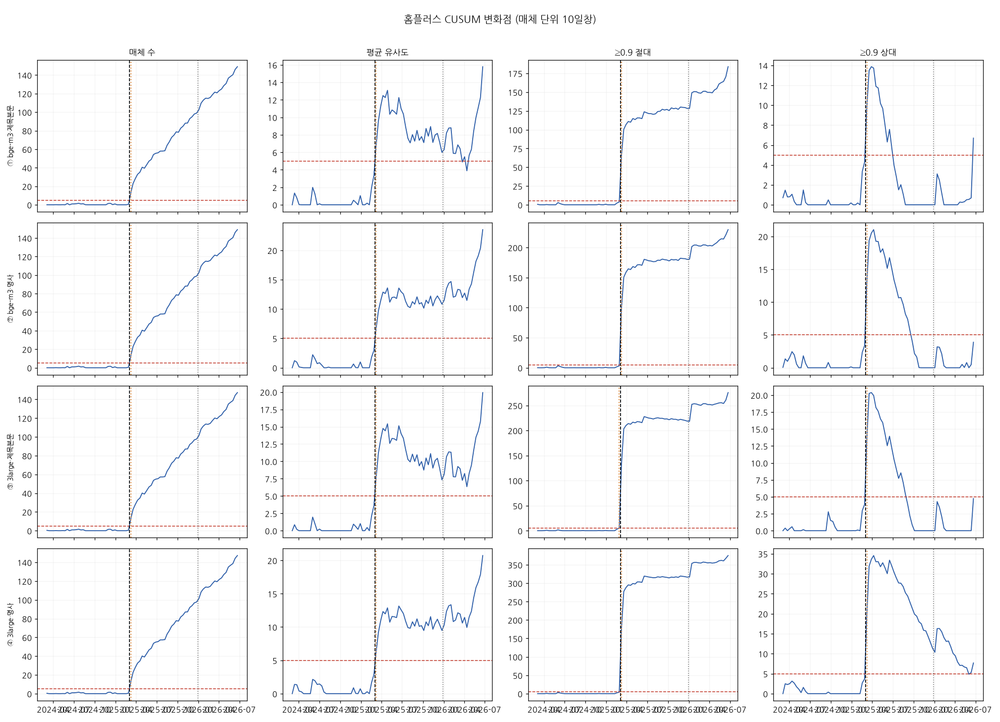
| 임베딩 | 매체 수 | 평균 유사도 | ≥0.9 절대 | ≥0.9 상대 |
|---|---|---|---|---|
| ① bge-m3·제목본문 | 2025-03-09 | 2025-03-09 | 2025-03-09 | 2025-03-09 |
| ② bge-m3·명사 | 2025-03-09 | 2025-03-09 | 2025-03-09 | 2025-03-09 |
| ③ 3large·제목본문 | 2025-03-09 | 2025-03-09 | 2025-02-27 | 2025-03-09 |
| ④ 3large·명사 | 2025-03-09 | 2025-03-09 | 2025-03-09 | 2025-03-09 |
| 네 임베딩의 거의 모든 지표가 회생 신청 닷새 뒤인 2025-03-09에 변화점이 잡혀, 동조화 상승이 사건과 거의 동시에 시작됐다. | ||||
두 사례를 같은 틀로 나란히 놓으면, 동조화 측정에서 집계 단위가 결정적이라는 결론은 사건 유형을 가로질러 재현된다. 두 사건 모두 기사 단위에서는 동조화가 묻히고 매체 단위에서 드러나며, 매체 수·평균 유사도·닮은 보도의 절대량이 사후에 유의하게 오른다. 다만 동조화의 강도는 다른데, 거의 동일한(≥0.9) 매체쌍 비중이 고려아연은 8.5%에서 19.4%로 크게 뛴 반면 홈플러스는 7.4%에서 8.4%로 거의 변하지 않는다. 곧 홈플러스 보도는 닮은 보도의 양은 늘었으나 고려아연만큼 "한목소리"로 수렴하지는 않아, 사건의 성격(첨예한 경영권 분쟁 대 회생 절차)에 따라 동조화의 형태가 달라질 수 있음을 시사한다.
동조화가 이 기업 보도의 상시적 속성인지 사건이 만든 것인지를 가리기 위해, 기사를 유형(이슈·일반보도·광고)으로, 그리고 양자 대립 구조인 고려아연에 한해 MBK 논조(긍정·중립·부정)로 분류하여 유형별 동조화를 비교한다. 분류는 gpt-4o-mini로 수행하였고, 임베딩이 있는 기사를 대상으로 한다(고려아연 49,478건·홈플러스 46,899건).
기사 유형 분포를 보면 사건을 실질적으로 다루는 이슈 기사가 60.8%로 다수이고, 평시 일반보도가 31.1%, 광고가 0.5%, 스침·타사가 7.6%다. 이슈 기사의 MBK 논조는 한쪽으로 크게 기울어, 논조가 부여된 25,524건 가운데 부정이 62.5%인 반면 긍정은 5.3%에 그친다(부정:긍정 약 12:1). 동조화된 사건 보도가 압도적으로 MBK에 부정적임을 보여주며, 이는 인위적 여론 조성 의견서의 'MBK 부정기사 양산' 주장과 직접 맞닿는다.
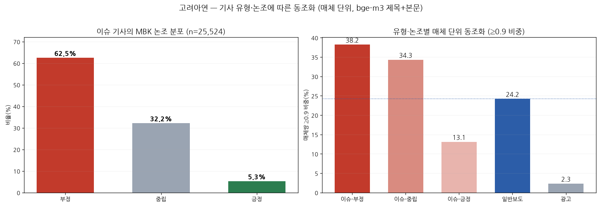
| 유형 | 기사 수 | 매체 평균유사도 | 매체 ≥0.9 비중 |
|---|---|---|---|
| 이슈-부정 | 15,948 | 0.836 | 38.2% |
| 이슈-중립 | 8,215 | 0.831 | 34.3% |
| 이슈-긍정 | 1,361 | 0.768 | 13.1% |
| 이슈-전체 | 30,082 | 0.809 | 30.2% |
| 일반보도 | 15,400 | 0.758 | 24.2% |
| 광고 | 223 | 0.662 | 2.3% |
| 분류는 gpt-4o-mini. 기사 단위 ≥0.95 near-duplicate 비율은 광고에서 1.2%로 유형 중 최고(보도자료 복붙 흔적)이나 표본(223건)이 작아 참고로만 본다. | |||
유형별 동조화에서 두 가지가 드러난다. 첫째, 같은 기업·같은 매체군임에도 이슈 보도(매체 단위 평균 0.809·≥0.9 비중 30.2%)가 일반보도(0.758·24.2%)보다 강하게 동조화된다. 곧 동조화는 이 기업 보도의 상시적 속성이 아니라 사건이 만든 것으로, 시점 통제(사전·사후)에 더해 내용 통제 기준선까지 통과한다. 둘째, 이슈 안에서 부정 보도(0.836·38.2%)가 가장 강하게 동조화되고 긍정 보도(0.768·13.1%)는 약하다. 양적 불균형(약 12:1)과 질적 집중(부정이 최고 동조화)이 겹쳐, MBK 부정 내러티브가 조직적으로 확산되었을 가능성을 가리킨다.
유형·논조 비교가 "어떤 보도가 동조화되는가"를 보였다면, 동조화가 실제로 어떻게 일어나는지는 발원 기사를 시간순으로 추적하면 더 직접적으로 드러난다. MBK 부정 이슈의 발원으로 공개매수 발표 당일의 첫 기사(2024-09-13 09:24, 연합인포맥스)를 잡고, 이후 모든 부정 기사가 그 발원 기사와 얼마나 닮았는지를 코사인유사도로 시간순으로 본다. 10분·시간의 미시와 1·5·10·20일의 거시, 세 척도로 받아쓰기의 속도와 지속을 함께 측정한다.
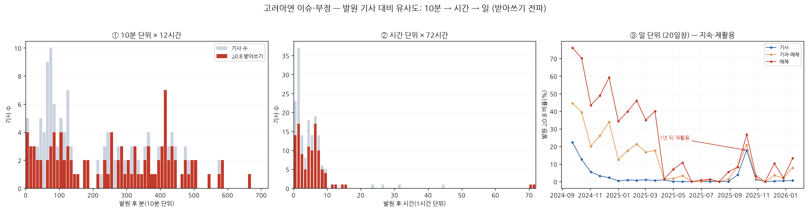
| 경과 | 기사 수 | 평균 유사도 | ≥0.8 (받아쓰기) |
|---|---|---|---|
| +1시간 | 23 | 0.818 | 14건 (60.9%) |
| +6시간 | 114 | 0.809 | 66건 (57.9%) |
| +24시간 | 163 | 0.816 | 106건 (65.0%) |
| +72시간 | 168 | 0.815 | 108건 (64.3%) |
받아쓰기는 즉각적이다. 발원 한 시간 안에 이미 23개 기사가 나왔고 그 60.9%가 발원과 ≥0.8로 유사하며, 24시간 안에는 발원과 ≥0.8인 기사가 106건에 이른다. 10분 단위로 잘게 보아도 발원 직후 두세 시간에 받아쓰기가 집중되어, 12시간 안에 발원과 ≥0.8인 기사가 103건에 이른다(그림 20①). 곧 공개매수 발표 기사가 나오자마자 수십 개 매체가 거의 같은 내용으로 따라 쓴 것으로, 윈도우 평균이 아니라 분·시간 단위에서 받아쓰기를 직접 보여 주는 증거다.
받아쓰기는 오래 지속되며 되살아난다. 발원과 ≥0.8인 비율은 매체 단위에서 사건 직후 70%를 넘은 뒤 서서히 낮아지지만, 약 1년 뒤인 2025년 10월에 다시 솟아오른다. 처음 발원한 기사의 틀이 한참 지나서도 재활용됨을 가리키며, 충격이 쉽게 사라지지 않는 비소멸적 동조의 흔적이다.
홈플러스는 분산 피해자가 MBK·홈플러스를 비판하는 비대칭 구조여서 논조 축 없이 유형(이슈·일반보도·광고)만 분류한다. 유형 분포는 고려아연과 닮아, 이슈 63.3%·일반보도 27.6%·광고 1.0%·무관 8.2%다. 핵심은 동조화 패턴이 같은 방향으로 재현된다는 점으로, 매체 단위에서 이슈 보도(평균 0.792·≥0.9 비중 24.8%)가 일반보도(0.710·13.6%)와 광고(0.629·2.0%)보다 뚜렷이 강하게 동조화된다.
| 유형 | 기사 수 | 매체 평균유사도 | 매체 ≥0.9 비중 |
|---|---|---|---|
| 이슈 | 29,672 | 0.792 | 24.8% |
| 일반보도 | 12,921 | 0.710 | 13.6% |
| 광고 | 476 | 0.629 | 2.0% |
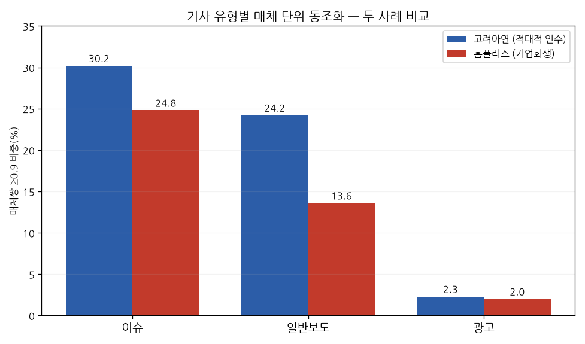
두 사례를 나란히 놓으면 '이슈 > 일반보도'라는 내용 통제 기준선이 사건 구조가 다른 두 사례에서 모두 성립한다(그림 21). 곧 동조화가 강해지는 것은 특정 기업의 보도 관행이 아니라 사건을 둘러싼 이슈 보도라는 점이, 적대적 인수와 기업회생이라는 상이한 사건에서 공통으로 확인된다. 다만 홈플러스에서 이슈 대 일반보도의 격차(≥0.9 비중 24.8% 대 13.6%)가 고려아연(30.2% 대 24.2%)보다 더 벌어져, 분산 피해자의 비판 보도가 일상 보도와 한층 또렷이 구분됨을 보여준다.
앞 절들이 동조화의 크기·시점·유형을 보였다면, 이 절은 그것이 사건 때문임을(인과 강건성), 어떤 매체가 이끄는지를(전파 구조), 광고와 어떤 관계인지를(영향) 검토한다.
사전·사후 비교가 보인 동조화 상승이 사건 때문인지, 아니면 임의의 시점에서도 나타나는 일반적 추세인지는 placebo 검정으로 가린다. 사건과 무관한 사전 구간에서 가짜 사건일을 1,500개 무작위로 뽑아 각각의 사전→사후 변화를 계산하고, 실제 사건일의 변화가 그 분포에서 얼마나 극단인지를 본다. 실제가 가짜 분포의 꼬리에 위치할수록 '사건 때문에 동조화가 일어났다'는 주장이 단단해진다.
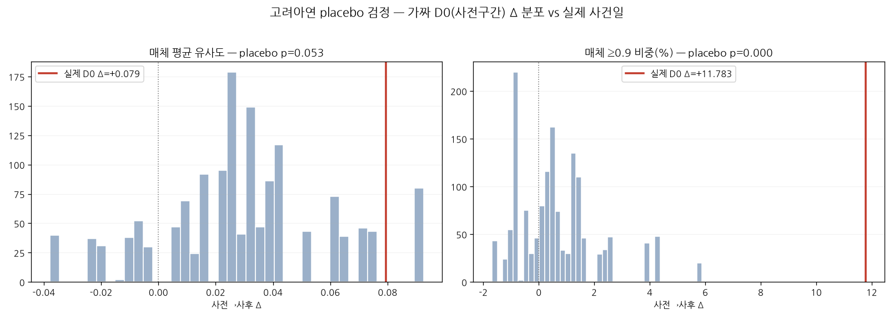
| 지표 | 실제 Δ | 가짜 평균 Δ | placebo p |
|---|---|---|---|
| 매체 평균 유사도 | +0.079 | +0.030 | 0.053 |
| 매체 ≥0.9 비중 | +11.8%p | +0.65%p | <0.001 |
핵심 지표인 매체 단위 ≥0.9 비중은 결정적으로 사건 특이적이다 — 실제 사건일의 상승폭(+11.8%p)이 1,500개 가짜 사건일 어느 것보다 크다(placebo p<0.001). 곧 매체들이 거의 같은 보도로 수렴하는 현상은 임의의 시점에서는 나타나지 않고 오직 공개매수 사건에서만 발생한다. 한편 매체 평균 유사도의 상승은 가짜 분포의 상위 5%에 걸쳐(p=0.053) 한계적으로 유의한데, 공개매수 전부터 보도가 서서히 달아오른 완만한 사전 추세가 일부 섞여 있기 때문이다. 종합하면 동조화의 가장 강한 신호인 거의 동일한 보도의 집중은 사건이 일으킨 것임이 placebo로 확인된다.
받아쓰기에 방향이 있는지는 동시발행 쌍의 시간 선후로 본다. 60분 안에 발행된 서로 다른 매체의 ≥0.85 유사 기사쌍에서 먼저 낸 매체를 허브(선행), 나중에 낸 매체를 스포크(추종)로 보고, 매체별로 먼저 쓴 횟수와 받아쓴 횟수를 센다. 부정 이슈에서 이런 교차매체 근접 쌍이 6만 건을 넘어, 거의 동시에 같은 내용을 주고받는 보도가 일상적임을 보여준다.
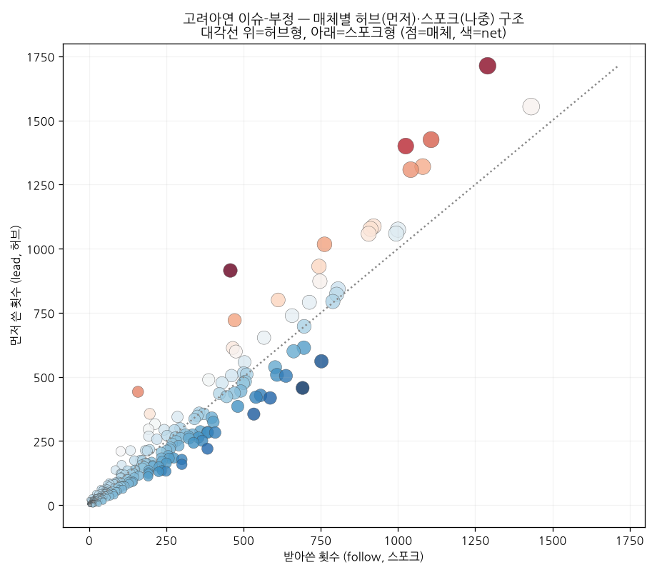
전파 구조에는 약한 위계와 강한 상호성이 함께 나타난다. 한 통신사가 가장 뚜렷한 허브로 받아쓴 것보다 먼저 쓴 횟수가 가장 많고, 몇몇 대형 매체도 순 선행 쪽에 자리해 의제의 출발점 역할을 한다. 그러나 대부분의 매체는 대각선 부근에 몰려 먼저 쓰기와 받아쓰기를 비슷하게 반복하며, 선행이 소수 허브에 집중되지도 않는다(상위 5개 매체가 전체 선행의 12%). 곧 동조화는 한두 허브가 일방적으로 퍼뜨리는 구조라기보다, 통신사·대형 매체가 출발점을 제공하고 다수 매체가 서로 빠르게 베껴 쓰는 조밀한 상호 전파망에 가깝다.
저널리즘·PR 이론은 광고주로서 기업의 영향력이 보도에 작용할 수 있음을 지적한다. 그러나 본 데이터로 광고와 부정 보도의 직접 관계(공적분)를 검정하기는 어렵다 — 고려아연 보도에서 광고·홍보성 기사는 0.5%(주평균 1.4건, 분석 주의 약 75%가 0건)에 불과해 시계열 검정에 필요한 변동을 확보할 수 없다. 광고가 보도를 좌우했다기보다 보도 자체가 압도적으로 이슈로 채워졌음을 보여주는 결과이자, 광고·협찬 영향의 직접 검증이 데이터 접근성의 한계 밖에 있음을 확인하는 대목이다.
대신 충분한 데이터로 가능한 것은 매체의 보도 성향이다. 매체별로 부정 이슈 비중과 일반보도 비중을 보면 둘은 강한 음의 상관을 보여(Spearman ρ=−0.74, p<10⁻³⁵), 매체가 부정 이슈에 특화된 군과 일상 보도에 머무는 군으로 뚜렷이 갈린다(그림 24). 곧 MBK 부정 내러티브는 전 매체가 고르게 받아쓴 것이 아니라 특정 매체군이 집중적으로 생산·확산한 것으로, 앞 절의 허브-스포크 구조와 맞물린다. 어떤 매체가 왜 그 군에 속하는지는 광고·협찬 등 상업적 관계의 질적 분석이 필요한 후속 과제다.
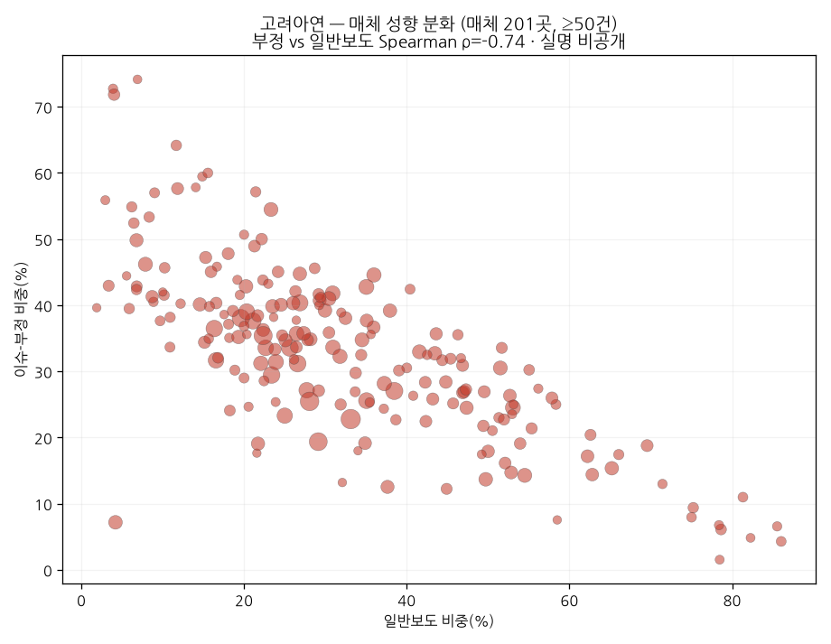
본 연구는 고려아연 사건이 만든 매체 간 보도 동조화를 의미 임베딩으로 측정하고 통계적으로 검정하였으며, 그 핵심 발견은 동조화 측정에서 집계 단위가 결정적이라는 점이다. 개별 기사 쌍은 사건의 다각화 때문에 동조화를 가리지만, 매체 단위 centroid는 그 다각화를 평균으로 흡수해 매체들의 수렴을 드러낸다. 그 결과 매체 단위에서 사후 동조화가 네 임베딩 모두에서 유의하게 나타났다(p<10⁻⁴).
이 결과는 매체 간 보도 동조화가 다름 아닌 매체 단위에서 측정되어야 함을 실증한다. 사건 후 매체 간 평균 유사도는 0.69에서 0.77로, ≥0.9 비중은 8.5%에서 19.4%로 상승하였고, 같은 기간 보도 매체 수도 91개에서 219개로 늘었다. 곧 동조화는 더 많은 매체가 같은 방향으로 합류하며 일어나는 현상이며, 이 결론은 네 임베딩 방식에서 일관되게 재현되어 강건하다.
두 번째 사례인 홈플러스 기업회생에서도 같은 결론이 재현된다. 매체 단위에서 평균 유사도(0.68→0.72)와 보도 매체 수(158→266), 닮은 보도의 절대량이 회생 신청 후 유의하게 올랐고, CUSUM은 네 임베딩 모두 신청 닷새 뒤를 변화점으로 짚었다. 다만 거의 동일한(≥0.9) 비중의 상승은 고려아연(8.5→19.4%)에 비해 홈플러스(7.4→8.4%)에서 미미하여, 집계 단위 효과는 사건을 가로질러 견고하되 동조화의 강도는 사건 성격에 따라 달라짐을 보여준다.
방법론적으로는 집계 단위와 시간 분해가 동조화 측정의 두 관건임을 본 연구는 보여준다. 매체 centroid는 보도의 분화를 흡수해 수렴을 드러내지만, 전 기간을 한 벡터로 섞으면 이슈와 비이슈가 뒤엉켜 시간이 뭉개진다. 따라서 시간 창으로 끊어 비이슈 기준선과 이슈 동조를 분리해야 하며, 본 연구는 이 두 장치로 종래 가려져 있던 동조화를 드러냈다. 사건 당일의 발행 타이밍 분석은 그러한 거시적 동조화의 미시적 메커니즘까지 함께 보여주었다.
저널리즘과 PR의 관점에서 보면, 매체 단위에서 지속적이고 구조화된 동조가 관찰되었다는 사실은 일반적인 사건 중심 수렴을 넘어선 체계적 동조 보도의 가능성을 시사한다. 본 연구는 인과를 입증하지 않지만, 평소 기준선을 크게 벗어나 사건 국면 내내 유지된 매체 단위 동조는 자연발생적 생산만으로는 설명하기 어려운 패턴이다. 이는 앞서 정리한 뉴스 어뷰징·미디어 캡처·조직의 의제 형성 같은 구조적 힘이 일부 매체 군의 보도에 작용했을 가능성을 열어 둔다. 다만 어떤 힘이 실제로 작동했는지는 매체 군별 논조·프레임의 방향성과 기업 보도자료·광고 협찬과의 관계를 직접 분석해야 비로소 가릴 수 있다.
후속 연구 문제. 본 연구가 측정으로 답한 RQ1~RQ3을 넘어, 다음 물음은 논조·프레임 라벨링과 기업 보도자료 코퍼스 등 추가 자료를 통한 분석으로 이어진다.
RQ4. 동기화가 높은 매체 군은 같은 논조·프레임을 공유하는가(헤드라인과 본문 유사성의 관계 포함)?
RQ5. 매체의 제휴 카테고리와 실제 보도 주제 분포 사이에는 어떤 차이가 있는가?
RQ6. 관찰된 동기화 패턴은 뉴스 어뷰징·전략적 뉴스 생산과 어떤 관련이 있는가?
RQ7. 뉴스 생산에 작용하는 기업의 의제 형성 노력은 어떤 형태로 나타나는가?
본 연구는 단일 사례에 한정되어 있어 일반화에는 더 다양한 사례의 추가 검증이 필요하며, 매체 단위 동조화의 인과 구조까지 직접 규명하지는 못하였다. 아울러 동조화 측정의 신뢰성은 사건 당일의 보도 밀집을 빠짐없이 담았는지에 좌우되므로, 후속 사례에도 본 연구가 제작한 전수 수집 크롤러를 동일하게 적용해 데이터의 완전성을 먼저 확보해야 한다. 향후 본문 문장 단위의 중복률을 결합하면 네이버 규정의 정량 척도와 직접 연결할 수 있고, 다양한 사건 구조에 같은 틀을 적용하면 동조화의 일반 법칙을 탐색할 수 있을 것이다. 나아가 매체 군별 논조와 프레임의 방향성, 기업 보도자료와 기사 본문의 유사성, 광고·협찬 관계를 질적으로 분석하면, 본 연구가 측정한 구조적 동조를 의제 형성과 미디어 캡처라는 생산 메커니즘과 직접 연결할 수 있다. 본 연구가 제시한 매체 단위와 시간 분해 측정틀이 그러한 후속 연구의 든든한 출발점이 되기를 기대한다.
김도경 (2026). 문장 임베딩과 LLM 기반 추론을 활용한 '중국 책임 귀인 프레임' 사용의 측정 — 2014–2022년 한국. 중국사회과학논총.
박대민·서봉원·김성현 (2018). 유사도, 기사 공동 출현, 정보원에 기초한 뉴스문장연결망 분석 알고리즘 제안. 커뮤니케이션 이론.
박지원·양치복·이충권 (2026). 문서 임베딩 생성 방법에 따른 토픽 모델링 성능 비교: S-BERT와 LLM 임베딩 모델 중심으로. 스마트미디어저널.
송석현 (2019). 미디어 플랫폼 어뷰징의 법적 문제: 어뷰징 행위에 대한 규제를 중심으로. 법학연구, 29(4).
안정윤·이종혁 (2015). '네트워크 의제설정'의 출현: 뉴스 매체와 온라인 게시판 간 이슈 속성 네트워크의 유사성 분석. 한국언론학보.
유재광·오경수 (2012). 신문의 뉴스프레임과 정치인 발언 보도태도 연구: 미디어법 이슈를 중심으로. 정치커뮤니케이션 연구, 26, 73–113.
이인규·강현철 (2025). 한국어 뉴스 데이터의 AI 생성 여부를 판별하기 위한 임베딩 방법과 머신러닝 모형의 적용에 관한 사례연구. Journal of The Korean Data Analysis Society.
이종혁 (2021). 매체 간 뉴스 동질화 현상에 대한 탐색적 연구: Doc2Vec을 통한 문서 유사도 측정의 활용. 언론정보연구.
정안용·박진영·남윤재 (2022). 텍스트마이닝과 네트워크분석을 활용한 스마트도시 언론보도 분석. Journal of The Korean Data Analysis Society, 24(4), 1563–1582.
조영신·유수정·한영주 (2015). 포털 기사 공급 형태 및 매체 지위와 어뷰징과의 관계에 대한 탐색적 연구: '네이버'를 중심으로. 한국언론학보, 59(6), 314–338.
진설아·허고은·정유경·송민 (2013). 트위터 데이터를 이용한 네트워크 기반 토픽 변화 추적 연구. 정보관리학회지, 30(1), 285–302.
최정균·진서훈·최종후 (2017). 텍스트 마이닝 기법을 이용한 언론사별 보도 변화 양상 탐구. Journal of The Korean Data Analysis Society, 19(5), 2509–2522.
한국언론진흥재단 (2023). 2023 언론수용자 조사. 한국언론진흥재단.
함민정·이상우 (2018). 온라인 뉴스에서 발생하는 어뷰징 행태 분석: 최시원 불독 관련 기사들을 중심으로. 정보사회와 미디어, 19(2), 91–120.
홍주현 (2024). 디지털 소셜 네트워크 시대 뉴스 생산 및 유통. 김경모 외, 「AI시대 저널리즘 미리보기」 (pp. 166–183). 한울.
Bennett, W. L. (1990). Toward a theory of press-state relations in the United States. Journal of Communication, 40(2), 103–127.
Boczkowski, P. J. (2010). News at work: Imitation in an age of information abundance. University of Chicago Press.
Chen, X., Hale, S. A., Jurgens, D., Samory, M., Zuckerman, E., & Grabowicz, P. A. (2024). Global news synchrony and diversity during the start of the COVID-19 pandemic. In Proceedings of the ACM Web Conference 2024 (WWW '24) (pp. 2639–2650). ACM.
Curtin, P. A. (1999). Reevaluating public relations information subsidies: Market-driven journalism and agenda-building theory and practice. Journal of Public Relations Research, 11(1), 53–90.
Devlin, J., Chang, M.-W., Lee, K., & Toutanova, K. (2019). BERT: Pre-training of deep bidirectional transformers for language understanding. In NAACL-HLT (pp. 4171–4186).
Flew, T., Martin, F., & Suzor, N. (2019). Internet regulation as media policy: Rethinking the question of digital communication platform governance. Journal of Digital Media & Policy, 10(1), 33–50.
Gao, T., Yao, X., & Chen, D. (2021). SimCSE: Simple contrastive learning of sentence embeddings. In EMNLP (pp. 6894–6910).
Ghinassi, I., Wang, L., & Newell, C. (2023). Comparing neural sentence encoders for topic segmentation across domains. PeerJ Computer Science.
Harder, R. A., Sevenans, J., & Van Aelst, P. (2017). Intermedia agenda setting in the social media age: How traditional players dominate the news agenda in election times. The International Journal of Press/Politics, 22(3), 275–293.
Hosseinmardi, H., Wolken, S., & Rothschild, D. M. (2025). Unpacking media bias in the growing divide between cable and network news. Scientific Reports.
Kiousis, S., Popescu, C., & Mitrook, M. (2007). Understanding influence on corporate reputation: An examination of public relations efforts, media coverage, public opinion, and financial performance from an agenda-building and agenda-setting perspective. Journal of Public Relations Research, 19(2), 147–165.
Kwak, K. T., Hong, S. C., & Lee, S. W. (2018). An analysis of a repetitive news display phenomenon in the digital news ecosystem. Sustainability, 10(12), 4736.
Kwak, K. T., Hong, S. C., & Lee, S. W. (2020). A study of repetitive news display and news consumption in Korea. Telematics and Informatics, 46, 101313.
McCombs, M. E., & Shaw, D. L. (1972). The agenda-setting function of mass media. Public Opinion Quarterly, 36(2), 176–187.
Reimers, N., & Gurevych, I. (2019). Sentence-BERT: Sentence embeddings using Siamese BERT-networks. In EMNLP-IJCNLP (pp. 3982–3992).
Schiffrin, A. (2021). Media capture: How money, digital platforms, and governments control the news. Columbia University Press.
Shi, J., & Wang, H. (2023). Examining the intermedia agenda-setting effects amid the Changsheng vaccine crisis. International Journal of Environmental Research and Public Health.
Shoemaker, P. J., & Reese, S. D. (1996). Mediating the message: Theories of influences on mass media content (2nd ed.). Longman.
Vargo, C. J., & Guo, L. (2017). Networks, big data, and intermedia agenda setting: An analysis of traditional, partisan, and emerging online U.S. news. Journalism & Mass Communication Quarterly, 94(4), 1031–1055.
Vargo, C. J., Guo, L., & Amazeen, M. A. (2018). The agenda-setting power of fake news. New Media & Society, 20(5), 2028–2049.
Wang, H., & Shi, J. (2022). Intermedia agenda setting amid the pandemic: A computational analysis. Computational Intelligence and Neuroscience.
본 연구의 전 과정은 수집 → 관련성 필터링 → 형태소 → 임베딩 → 분석·검정의 다섯 단계로 이어지며, 검색어만 바꾸면 다른 사건에도 그대로 적용되도록 두 벌의 노트북으로 공개한다. 크롤러(뉴스크롤러)가 검색어별 기사와 본문을 모으면, 분석 노트북(뉴스분석)이 관련성 필터링부터 통계 검정까지 한 번에 수행한다. 두 노트북은 Google Colab과 서버 JupyterLab에서 똑같이 동작하며, 코드와 분류 프롬프트는 공개 저장소 github.com/sdkparkforbi/news-crawler 에 있다.
관련성 필터링은 대형 언어모델(gpt-4o-mini)로 각 기사를 관련·무관과 세부 카테고리로 분류하는 단계다. 회사명과 한 줄 맥락, 카테고리 목록을 담은 분류 프롬프트에 제목과 본문 앞부분을 스무 건씩 묶어 넣으면, 모델이 JSON으로 관련 여부와 카테고리를 돌려준다. 본 연구는 관련으로 분류된 기사만 분석 대상으로 삼아, 사건과 무관한 보도가 동조화 측정을 흐리지 않도록 하였으며, 고려아연은 이 절차로 관련 50,188건이 가려졌다.
측정의 토대가 되는 기사와 임베딩은 MySQL 데이터베이스 articlepush에 적재한다. 원본 기사는 articles 테이블에 사건명·발행시각·매체·기자·본문과 함께 관련성·카테고리가 저장되고, 네 가지 임베딩은 각각 별도 테이블에 float16 벡터로 저장되어 분석 단계에서 기사 단위로 빠르게 불러올 수 있다. 표 7은 사용한 데이터베이스 테이블을 정리한 것이다.
| 테이블 | 내용 | 핵심 컬럼 (차원·모델) |
|---|---|---|
| articles | 원본 기사·메타·분류 | id, company, related, category, published_dt, press, reporter, title, body |
| article_embeddings | ① bge-m3 · 제목+본문 | article_id, vec(1,024d float16), model, dim, company |
| article_noun_embeddings | ② bge-m3 · 명사 | article_id, vec(1,024d), nouns_all·noun_tfidf·nouns_kept(JSON) |
| article_emb_oai | ③ 3large · 제목+본문 | article_id, vec(3,072d float16), model, dim |
| article_noun_emb_oai | ④ 3large · 명사 | article_id, vec(3,072d), model, dim |
학생과 후속 연구자는 노트북에서 검색어·사건일·분류 카테고리만 바꾸면 본 보고서와 같은 그림과 표를 재현할 수 있다. API 키(bge-m3·gpt-4o-mini·3large)는 입력 즉시 메모리에만 두어 코드나 로그에 남기지 않으며, 결과는 캐시되어 중간에 끊겨도 다시 실행하면 이어서 진행된다.